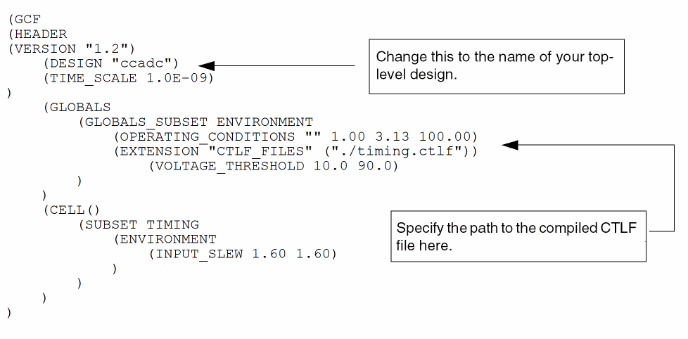

C
Parasitic Aware Design and Diva Verification
This appendix describes parasitic aware design flows for analog and mixed-signal circuits. It comprises of the following sections:
- Diva Flow: Simulating Analog Circuits with Parasitic Aware Design
- Diva Flow: Simulating Mixed-Signal Circuits with Parasitic Aware Design
Diva Flow: Simulating Analog Circuits with Parasitic Aware Design
This section describes how you can use Cadence® tools to investigate the effect of parasitics on analog circuits. By accounting for the effect of parasitics, you can improve the accuracy of your circuit simulations. If your design includes digital or mixed-signal circuits, skip this section and use Diva Flow: Simulating Mixed-Signal Circuits with Parasitic Aware Design.
This section comprises of the following topics:
- Overview
- Preparing Cell Libraries
- Creating Designs
- Creating Extracted Views
- Creating and Using a Configuration
- Simulating the Design
- Probing Parasitic Values
- Backannotating Parasitic Values
Overview
Simulating an analog circuit with parasitics requires these steps.
In this step, the tool calculates parasitics from information in the layout view of your circuit.
The following flow diagram illustrates the substeps in creating an analog_extracted view using the Diva® physical verification tool. The substeps for the Cadence RC network reducer are shown with dotted lines because they are optional.
After a successful simulation, you can select terminals and device pins on the schematic and use plot commands to display the results in a waveform window. The resulting waveforms can be used with all Virtuoso analog design environment (ADE) calculation and analysis tools.
Preparing Cell Libraries
Before you can follow the flow outlined in this chapter, you need to provide the following views and component description format (CDF) information for analog primitives and parasitic cells.
The analogLib library contains examples of analog primitives and parasitic cells that you can copy to create your cell library.
$CDS_INST_DIR/tools/dfII/etc/cdslib/artist/analogLib
Transferring Schematics from Diva to Assura
Any schematics, with placed estimated parasitic devices, that have been used with Diva will not be recognized if transferred to the Assura flow.
This is because the LVS (layout versus schematic) checks will ignore the following (shorted) devices: presistor, pinductor, tline2, tline3, tline4, tline4x, tline4p.
Preparing Technology Files
To prepare a library for parasitic extraction,
-
Describe the technology layers.
For details about the technology layers, refer to the Incremental Technology Databases and Display Resources User Guide. -
Add or modify the verification rules used by the Diva processes DRC, Extract, and LVS.
Refer to the Diva Reference for details about creating verification and extraction rules.
Adding Component Description Format Simulation Information
Refer to the Component Description Format User Guide for more details about the steps in this section.
To netlist primitives correctly, you must verify the auLvs CDF parameters for each primitive.
For more information about the options you can use with the command to start the software, refer to the Virtuoso Design Environment User Guide.
-
In the command interpreter window (CIW), choose Tools – CDF – Edit.
The Edit Component CDF form appears. -
In the upper portion of the form, choose Cell for CDF Selection and Base for CDF Type.
You must edit the base-level CDF for changes to be effective. -
Fill in the Library Name and Cell Name fields, or click the Browse button to select the cell.
The Edit Component CDF form expands to display additional information. -
In the Simulator Information area of the expanded Edit Component CDF form, click Edit.
The Edit Simulation Information form appears, displaying existing CDF information about auLvs netlisting. - Select auLvs in the Choose Simulator drop-down list box.
-
Ensure that the netlistProcedure field specifies
ansLvsCompPrim. This is the internal auLvs procedure for netlisting primitives. -
In the instParameters field, specify the parameters you want in the netlist.
A component can have several parameters, such as temperature coefficients, that do not apply to LVS netlist comparison. You LVS comparison rules tell LVS how to handle such parameters.
Ifmodelis included in the instParameters field, auLvs uses the value of the model property in the instance instead of the value of componentName in the netlist. -
In the componentName field, type the component name you want included in the netlist.
This optional field allows you to use a common name in the netlist for different cells. For example, 3-terminal cellviews (with programmable bulk nodes) and 4-terminal cellviews (with a bulk node as a pin) that have distinct names likenmos3andnmos4can be netlisted with the same component name likenmos.
The component namespcapacitor,presistor,pinductor, andpdiodeare used for parasitic devices. All these devices are removed from the netlist before layout versus schematic (LVS) runs, but are used in simulation and backannotation. For presistors and pinductors, the nets are shorted together. -
In the termOrder field, type the names of the device terminals as they appear in the symbol cellview.
This is the order in which the terminals are netlisted. -
If termOrder uses programmable nodes, type the names of the terminals in deviceTerminals.
The input is the same as for termOrder, but programmable nodes are replaced by names in this field. -
For existing designs that use older databases, use prop Mapping to change the name of an instance parameter.
This allows instParameter names that use lowercase letters to be mapped to LVS rules that are defined in uppercase letters. - In the Permute Rule field, specify the LVS permute rule used to define equivalent pins.
- Click OK on the Edit Simulation Information form and Apply on the Edit Component CDF form to accept your changes.
Creating Designs
If you intend to extract parasitic components from the layout view and run a simulation with parasitics, use the following guidelines to avoid problems as you plan your design.
- Devices with the componentName parameter set to pcapacitor, presistor, pinductor, and pdiode are automatically removed from the netlist. Do not use these names for your components.
- Nets are shorted together for LVS on presistors and pinductors.
- Do not use the LVS permuteDevice parameter to match groups of components in a series because that makes it impossible to determine which device is which for waveform probing.
Creating Extracted Views
You use the Diva physical verification tool to extract parasitics from the layout view of a block. Then you use LVS to compare the extracted view to the schematic view to identify areas that are not consistent between the views. After a successful LVS run, you create an analog_extracted view of the design.
Extracting Parasitics
To extract parasitics from the layout view of a cell or block,
-
Choose Verify – Extract from the layout cellview of the cell.
The Extractor form appears. -
Choose flat for Extract Method.
You need to use flat extraction because parasitic capacitance values can vary between different instances of the same cell. Each cell, therefore, must be extracted. -
(Optional) Choose Join Nets With Same Name.
This ensures that nets with the same name are joined automatically. -
To select the types of parasitics you want extracted, click Set Switches.
The Set Switches form appears. The parasitics displayed vary, depending on the extraction rules file defined for your design. In some cases, you do not need to make any selections.
To select more than one item, click your first selection, then hold down theControlkey and make the rest of your selections. -
When you have specified the parasitics you want, click OK.
The Extractor form reappears with the parasitics you selected in the Switch Names field. -
Click OK or Apply to create the extracted views.
A message in the command interpreter window (CIW) tells you when the extraction process is complete.
Comparing Schematic and Extracted Views
To compare the schematic view with the extracted view created earlier, follow these steps.
-
From a window displaying the extracted view, choose Verify – LVS.
The LVS form appears.For more information on the LVS form see Verify Menu Commands in the Diva Reference. -
Depending on which views are open, use one of the following procedures to identify the schematic and extracted views that you want to compare.
If both the schematic and extracted views are open If only the extracted view is open - Enter the names of the rules file and rules library for the Diva LVS rules.
- Click the Run button to begin the comparison.
- When the comparison finishes, click Info.
The Display Run Information form appears.
-
Click Log File.
Scroll through the log file to the netlist comparison section near the end of the file. This section identifies any mismatches between the two files. Each error is described in the sections following the comparison results.
Not all mismatches are fatal. Look over the comparison results to determine if you need to correct one of the files and redo the extraction and comparison or if you can proceed with the views as they are. - Choose File – Close Window in the log file window.
- Click Cancel in the Display Run Information form.
- Correct any problems in the schematic or extracted views.
- If necessary, rerun the comparison.
Building an analog_extracted View
When the comparison between schematic and extracted views is acceptable, you need to select the parasitics to use for simulation. You also need to build the analog_extracted view.
-
In the LVS form, click Build Analog.
The Build Analog Extracted View form appears.For more information on the LVS form see Verify Menu Commands in the Diva Reference. -
Select one of the following choices to specify the analog parasitics that you want to use for simulation.
- Click OK to accept your settings and build the analog_extracted view.
Creating and Using a Configuration
This section explains how to set up a configuration so that the simulator runs with the analog_extracted view created in the previous step. The steps given here for using the Cadence Hierarchy Editor to create a configuration are abbreviated. For complete information, see the Cadence Hierarchy Editor User Guide.
To create a configuration for your design,
-
From the CIW, choose File – New – Cellview.
The Create New File form appears. - Choose the library for the new file.
- Type the name of the cell for which you want to create the configuration.
The top-level cell for your design is usually the appropriate cell to use.
-
If you do not want to use
configas the view name, type the name you want into the View Name field. - Choose Hierarchy-Editor from the Tool drop-down list box.
-
Ensure that the Library path file field correctly specifies the
cds.libfile that contains the paths to your libraries. - Click OK.
The New Configuration form appears.
The Use Template form appears.
- Select a template that is compatible with the simulator you are running from the Name drop-down list box.
-
Click OK in the Use Template form.
The New Configuration form redisplays with default data for the Top Cell and Global Bindings sections. This allows you to modify a typical view list and stop list, rather than creating them from scratch.
Templates exist for each of the simulators. To create templates that provide defaults for these fields, see the Cadence Hierarchy Editor User Guide. -
In the Top Cell section, enter the library, cell name, and schematic cellview from which to build the configuration.
Be sure to specify schematic for the view type because the configuration is built from the original schematic of your design. -
Click OK.
The Hierarchy Editor window displays your data.
The Hierarchy Editor window configures the design by using a default View List and Stop List in the Global Bindings section. You need to modify these lists for your design. -
Use one of the following methods to specify the analog_extracted view for the cells or blocks for which you want parasitics simulated.
- Choose View – Update to reconfigure the design to reflect your changes.
The Update Sync-up form appears.
- Click OK.
- Choose File – Save to save the configuration with your changes.
- Choose File – Exit to close the Hierarchy Editor.
Simulating the Design
The Analog Design Environment Simulation window appears.
The Choosing Design form appears.
- Select the library and cell name of your design.
- Select config from the View Name drop-down list box.
-
Click OK.
This view supplies configuration as well as schematic information. - In the Analog Design Environment Simulation window, choose your simulator, model path, environment variables, analyses, and simulator options.
-
Choose Simulation – Run.
When complete, the schematic appears so that you can select outputs and probe the design. - Choose Outputs – Set from Schematic.
-
Select the terminals in the schematic, or in the layout views of the blocks where parasitics were extracted, to define outputs.
Probing Parasitic Values
By probing the schematic or extracted view, you can examine the instances of parasitic components. To probe parasitic values, follow these steps.
-
In the LVS form, click the Parasitic Probe button.
The Parasitic Probing form appears. - In the Max list size field, specify how many parasitic instances to display.
- Sort parasitics by resistance or capacitance by selecting R or C.
-
Click the appropriate button to specify which parasitics should be collected.
-
Click Whole Net and then select a net in the schematic or extracted view to display an ordered list of all the parasitics on the net. The largest resistances or capacitances appear at the top of the list.
- Click Point to Point and then select two pins or instance pins (on the same net) in the schematic or extracted view to collect all the parasitics between two points.
- Click Net to Net and then select two nets in the schematic or extracted view to collect parasitic capacitances between two different nets.
A list of the collected parasitic instances appears. Select an instance from this list to highlight the component symbol associated with this parasitic on the extracted view. -
Click Whole Net and then select a net in the schematic or extracted view to display an ordered list of all the parasitics on the net. The largest resistances or capacitances appear at the top of the list.
Probing Using the Diva Probing Form
If you choose to probe on a net by selecting Tools – Diva – Verify – Probe, you should be aware that the only probing option supported here, by parasitic aware design in the Diva flow, is where you choose to select Probing Method: single w/o parasitics, and then click the Add Devs for Net option.
Out of Context Probing
A cell view is said to be in context when it is the view that is “bound” via the configuration, that is, the view that is picked up by the simulator.
A view can therefore be classified as being out of context when it is not the current bound view. For example, if you want to use an analog_extracted view in your simulation, you need to set up a configuration that will override the default view for one or more instances, likely to be schematic, to be “analog_extracted”.
When you now simulate this design, any views that are bound to “analog_extracted” will be netlisted to include the parasitics in them.
Performing Out of Context Probing
To perform out of context probing, using the above example, you would therefore have to descend into a view that is not analog_extracted, e.g. the schematic view.
From here, you would perform simulation probing within that view, for example from the Analog Development Environment (ADE). Within the ADE, you would select either:
Results – Direct Plot – Transient Signal
Results – Plot Outputs – Transient Signal.
analog_extracted view, this can occasionally fail during the reading of the design with an “out of memory” error. If this happens, it can be due to the chip being too big to simulate. The recommendation, if this occurs, is to break the chip up into smaller blocks and then simulate partially with extracted views and partially with schematic views.Backannotating Parasitic Values
-
Click the Backannotate button on the LVS form to backannotate the resistances and capacitances to the schematic.
The Parasitic Backannotation form appears. -
Select the font size and label offsets that you want and click the Add Parasitics button.
Resistance and capacitance labels appear on the schematic view. To see them, you might need to zoom in on a portion of the schematic.
- Click the Remove Parasitics button to remove these labels.
-
Choose Print All to write all of the parasitics to a file.
The Print All Parasitics form appears. -
Click the appropriate Sort Parasitics by button.
Select R for a list sorted by resistance or C for a list sorted by capacitance. - Specify the filename for the printed listing.
Diva Flow: Simulating Mixed-Signal Circuits with Parasitic Aware Design
The information in this section describes how you can use Cadence® tools to investigate the effect of parasitics on mixed-signal circuits. By accounting for the effect of parasitics, you can improve the accuracy of your circuit simulations. If your design includes only analog circuits, go to Diva Flow: Simulating Analog Circuits with Parasitic Aware Design.
This section comprises of the following topics:
- Overview
- Estimating Delays (Pre-Layout)
- Calculating Delays (Post-Layout)
- Preparing for Post-Layout Mixed-Signal Parasitic Aware Design
- Probing Parasitic Values
Overview
The flows in this section describe two ways to calculate delays for mixed-signal circuits.
- You can estimate delays before layout by using timing library format (TLF) and fan-in and fan-out information.
- You can use layout information to determine delays with increased accuracy.
The pre-layout flow is discussed in Estimating Delays (Pre-Layout) For information on using layout information to calculate delays, see Calculating Delays (Post-Layout).
CDS_Netlisting_Mode is set to Analog. To ensure that all the tools for the flow are available, start your session with the command virtuoso.For more information about the options you can use with the command to start the software, refer to the Virtuoso Design Environment User Guide.
Estimating Delays (Pre-Layout)
Even without layout information, you can obtain useful delay estimates of digital partitions by following the pre-layout mixed-signal parasitic aware design. The figure below illustrates how the Pearl timing analyzer operates on the digital netlist to produce a standard delay format (SDF) file. The parasitic aware design flow then annotates the SDF file to the top-level cell instance.
Setting Up for Pre-Layout Delay Estimation
To specify that delays are to be estimated, set up the Mixed Signal Options form as described in the following steps.
-
Choose Simulation – Options – Mixed Signal in the Analog Design Environment Simulation window.
The Mixed Signal Options form appears. - If necessary, set the DC Interval and Max DC Iterations fields.
-
Choose the Estimate (Pre-Layout) button.
The MIxed Signal Options form expands to reveal related options. - Edit the delay calculator files as necessary.
For guidance, see Preparing the pearl.cmd and gcfConstraints.gcf Files.
For more information, see Editing the SDF Annotator File.
Preparing the pearl.cmd and gcfConstraints.gcf Files
The Pearl timing analyzer requires two control files: pearl.cmd and gcfConstraints.gcf. The pearl.cmd file is the command initialization file for the Pearl timing analyzer. The gcfConstraints.gcf file specifies the boundary and operating conditions for the analysis and lists the compiled timing library format (CTLF) file to be used. You can do either of the following:
-
Provide these files in one of the locations listed in Locations Searched for the pearl.cmd and gcfConstraints.gcf Files
If you provide the files, clicking on the Command and Constraints buttons opens the files for editing. -
Create these files from templates by clicking on the Command and Constraints buttons
If the files do not exist, clicking the buttons copies templates to your run directory and opens the copies for editing.
Locations Searched for the pearl.cmd and gcfConstraints.gcf Files
The Pearl timing analyzer searches for the pearl.cmd and gcfConstraints.gcf files in the following locations, which are searched in the order given.
-
The run directory
For example, if the simulation directory is$HOME/simulation, the run directory is$HOME/simulation/
topLevelCellName/simulatorName/viewName/netlist/digital -
Your working directory (where you start
virtuosooricms) -
Your home directory
($HOME) -
Your installation path (
$CDS_INST_DIR/tools/dfII/etc/tools/mmsimenv)
Editing the pearl.cmd and gcfConstraints.gcf Files
You can change the contents of the gcfConstraints.gcf and pearl.cmd files as necessary.
-
To change the
gcfConstraints.gcffile, click the Constraints button in the Mixed Signal Options form. Your default text editor opens, displaying the contents of the file. For example, the file might contain information llike this.

For more information about the run directory, see Locations Searched for the pearl.cmd and gcfConstraints.gcf Files.
Do not use a tilde (~) to specify the path.
When you finish editing the file, save it.
-
To change the contents of the
pearl.cmdfile, click the Command button in the Mixed Signal Options form. The Command Options form appears. - Set the options as required.
- Click OK.
Editing the SDF Annotator File
The simulator uses the sdf.cfg file to control the SDF annotation. An existing sdf.cfg file that you want the simulator to use must be located in one of the following locations, which are searched in the following order. These are the same locations searched for the pearl.cmd and gcfConstraints.gcf files.
-
The run directory
For example, if the simulation directory is$HOME/simulation, the run directory is$HOME/simulation/
topLevelCellName/simulatorName/viewName/netlist/digital -
Your working directory (where you start
virtuosooricms) -
Your home directory
($HOME) -
Your installation path (
$CDS_INST_DIR/tools/dfII/etc/tools/mmsimenv)
To edit the sdf.cfg file, or to copy a template so that you can create a new sdf.cfg file,
-
Click Config on the Mixed Signal Options form.
The SDF Annotator Config File form appears. - Change the values as necessary.
Simulating a Design with Pre-Layout Estimation
After you set up the mixed-signal simulation options, you are ready to simulate. Follow the standard mixed-signal simulation process.
Calculating Delays (Post-Layout)
Simulating a mixed-signal design with parasitics calculated from layout information involves the following major steps:
- Preparing cell libraries
- Creating a mixed_extracted view of your design
- Creating or modifying a configuration for the design so that mixed_extracted views are used for the mixed-signal simulation
- Using one of the mixed-signal simulators to simulate the configured schematic with parasitics included
The figures below shows the flow for steps 2 and 3 in graphical format. The Cadence RC network reducer steps are shown with dotted lines because they are optional.
Digital parasitics are calculated by the Pearl timing analyzer or can be imported from an external calculator. The SDF file created by the timing analyzer is annotated to the netlist at simulation time.
Preparing for Post-Layout Mixed-Signal Parasitic Aware Design
Before you can run a post-layout mixed-signal parasitic aware design, you must ensure that the necessary preliminary steps are complete. The following sections describe the tasks.
- Preparing Libraries for Post-Layout Mixed-Signal Parasitic Aware Design
- Preparing Layout Views for Analog and Digital Cells
- Updating View and Stop Lists for LVS
- Preparing to Create the top.spf File
Preparing Libraries for Post-Layout Mixed-Signal Parasitic Aware Design
Ensure that the cells and primitives that you plan to use in a post-layout parasitic aware design have the following required views and information.
|
layout view (with ivCellType = “graphic” for |
|
If you are using the Pearl timing analyzer, an entry in a compiled timing library format (CTLF) file |
|
|
layout view (with ivCellType = “graphic” for |
The following sections describe how to prepare some of this information.
Creating an parasitic View for a Digital Primitive
Each digital primitive must have an msps stopping view, which is required for layout versus schematic (LVS).
-
In the CIW, choose Tools – Mixed Signal Environment – Prepare Library for MSPS.
The Create msps views & auLvs CDF simInfo form appears. - Select the primitives for which you want to create msps views. As described below, you can either select the primitives manually or select primitives that have certain specified views.
Selecting Primitives Manually
To select primitives manually,
-
Choose a cell from the Not in the Selected List list box, and click the right-arrow button to add it to the In the Selected List list box.
To select more than one cell, click your first selection, then hold down theControlkey and click the rest of your selections. - To create an msps view for each cell in the In the Selected List list box, click OK or Apply and then click Yes in the create msps views confirmation form.
Selecting Primitives with Specified Views
To select primitives that have specified views,
-
Click Select Cells.
The Select Cell Views form appears. -
Change the View Choice List field as necessary.
The views specified in the View Must List field and the View Choice List field become the selection criteria for digital primitives. To be selected, a cell must have all the views specified in the View Must List field and at least one of the views specified in the View Choice List field.
For example, assume that View Must List containslayoutandsymboland that View Choice List containsbehavioralandauLvs. Then any cell that has a layout view, a symbol view, and either a behavioral view or an auLvs view meets the search criteria. -
Click
OK or
Apply
.
The search results appear in the In the Selected List list box on the Create msps views & auLvs CDF simInfo form. - In the Create msps views & auLvs CDF simInfo form , click OK or Apply to create an msps view for each cell in In the Selected List .
- Confirm your actions by clicking Yes in the create msps views confirmation dialog box.
- If any of the selected cells have existing auLvs CDF siminfo, the create auLvs Siminfo confirmation dialog box asks you to confirm the overwrite.
Preparing Layout Views for Analog and Digital Cells
In macro mode, the extractor treats any cell with pins as a macro cell and stops expanding it. If a block is an analog block or a hierarchical digital block and requires further expansion, you need to add the property ivCellType = "graphic" to the layout master of the block. With this property set, the extractor expands the cell even though pins exist.
You can set the ivCellType property at the instance level or for multiple cells in the macroCellFile. Refer to the Diva Reference for details on either of these methods.
For example, the following procedure sets the ivCellType property at the instance level for a cell. With this method, every instance of this cell in the design has the same setting.
- Open in edit mode the layout view of the instance you want expanded to the transistor level.
-
From the Layout window, choose Design – Properties.
The Edit Cellview Properties form appears. -
Choose Property.
The Edit Cellview Properties form expands. - Click the Add button.
The Add Property form appears.
-
Type
ivCelltypein the Name field. - Set the Type drop-down list box to String.
-
Type
graphicin the Value field. - Click OK to add the new property and its value.
Updating View and Stop Lists for LVS
The .simrc file contains the view lists and stop lists for Diva® LVS. For mixed-signal parasitic aware design, you must update these lists with the msps view before you run LVS.
-
Open the
.simrcfile using any text editor. -
Add or update the following variable definitions in the
.simrcfile so that the msps view appears at the beginning of each list. For example, after you update the file, the definitions might look like this:lvsSchematicViewList = '( "msps" "auLvs" "schematic" "symbol")
lvsSchematicStopList = '( "msps" "auLvs")
lvsLayoutViewList = '( "msps" "auLvs" "extracted")
lvsLayoutStopList = '( "msps" "auLvs")
For standard settings for these variables, refer to the Diva Reference. -
Save the
.simrcfile.
Preparing to Create the top.spf File
The Pearl timing analyzer uses a standard parasitic format (SPF) file called top.spf, which contains the parasitic information for your design. In preparation for creating this file, you must ensure that the property names for resistance and capacitance are set to r and c.
- In the CDF Simulation Information section of the presistor or pcapacitor component, specify the resistance and capacitance parameter names as r and c.
Creating mixed_extracted Views
For mixed-signal blocks, the extraction process consists of
- Verifying consistent pin direction in schematic and layout views
- Extracting parasitics and creating extracted views
- Comparing the schematic and extracted views
- Creating mixed_extracted views and (optional) using the Pearl timing analyzer to generate delay calculation files
The mixed_extracted views and the optional SDF files become input to the simulation of the top-level design.
You can run the extraction process on selected blocks within the design or on the entire design.
Verifying Consistent Pin Direction
To verify that pin directions on the schematic and layout views are consistent,
-
From a window displaying the layout or extracted view, choose Verify – MSPS Check Pins.
The MSPS Check Pins form appears. -
Click OK.
The CIW displays a list of any discrepancies. Fix them before you extract the parasitics.
Extracting Parasitics and Creating Extracted Views
To extract parasitics and create extracted views,
-
Choose macro cell for Extract Method.
This allows the digital cells to be extracted at the macro level.
Be sure that any analog blocks have theivCellTypeproperty set tographic. This ensures that the analog blocks are flattened. For more information, see “Preparing Layout Views for Analog and Digital Cells”. -
Choose Join Nets With Same Name (optional).
This ensures that nets with the same name are joined automatically. -
Click Set Switches to select the type of parasitics you want extracted.
The Set Switches form appears. The parasitics displayed vary, depending on the extraction rules file defined for your design. In some cases, you do not need to make any selections.
To select more than one item, click your first selection, then hold down theControlkey and click the rest of your selections. -
Click OK.
The Extractor form reappears with the parasitics you selected in the Switch Names field. -
Click OK or Apply to create the extracted views.
A message in the CIW tells you when the extraction process is complete.
Comparing Schematic and Extracted Views
To compare the schematic view with the extracted view created earlier, follow these steps.
-
From a window displaying the extracted view, choose Verify – LVS.
The LVS form appears.For more information on the LVS form see Verify Menu Commands in the Diva Reference. -
Depending on which views are open, use one of the following procedures to identify the schematic and extracted views that you want to compare.
If both the schematic and extracted views are open If only the extracted view is open - Fill in the names of the rules file and rules library for the Diva LVS rules.
- Click the Run button near the bottom of the form to begin the comparison.
- When the comparison finishes, click Info.
The Display Run Information dialog box appears.
-
Click Log File.
Scroll through the log file to the netlist comparison section near the end of the file. This section identifies any mismatches between the two files. Each error is described in the sections following the comparison results.
Not all mismatches are fatal. Look over the comparison results to determine if you need to correct one of the files and redo the extraction and comparison, or if you can proceed with the views as they are. - Choose File – Close Window in the log file window.
- Click Cancel in the Display Run Information dialog box.
- Correct any problems in the schematic or extracted views.
- If necessary, rerun the comparison and compare the results.
Building a Mixed_Extracted View
When the comparison between schematic and extracted views is acceptable, you need to select the parasitics to use for simulation. You also need to build the mixed_extracted view.
-
In the LVS form, click Build Mixed.
The Build Mixed Extracted View form appears. -
Verify that the Library, Cell, and View fields correctly specify the configuration view that you want to use.
If your design does not have a configuration view associated with it, refer to the Cadence Hierarchy Editor User Guide and create a configuration. -
Select one of the following options to specify the analog parasitics that you want to use for simulation.
-
Ensure that the
pearl.cmdandgcfConstraints.gcffiles are ready and available in one of the following locations, which are searched in the order given.-
The run directory
library_path/cell/view/mixed_extracted/layout_msb -
Your working directory (where you start
virtuosooricms) - Your home directory
-
Your installation path (
$CDS_INST_DIR/tools/dfII/etc/tools/mmsimenv)
For guidance on using the Command and Constraints buttons to view or change these files, see Preparing the pearl.cmd and gcfConstraints.gcf Files. When the files are ready, turn on the Calculate button in the Digital Delays section.
If you click OK without editing thepearl.cmdandgcfConstraints.gcffiles or without ensuring that the files are available in the searched directories, the Delay Calculator Option Files message window is displayed. -
The run directory
- Click Yes if you want to use the default templates for the option files.
- To build the mixed_extracted view, click OK in the Build Mixed Extracted View form.
The build mixed process removes all digital parasitics and places them in the SPF file. The Pearl timing analyzer uses the SPF file to calculate the delays and generate an SDF file. The mixed_extracted view contains analog parasitics and analog and digital instances for netlisting and simulation.
The build mixed process creates or places the following files in the layout_msb directory.
Modifying the Configuration
To use parasitic aware design, you must specify mixed_extracted as the View To Use for each cell in your top-level design for which you want the extracted parasitics simulated.
To specify mixed_extracted as the View To Use, you modify the configuration for your top-level design. If your design does not have a configuration, refer to the
- Open the Hierarchy Editor and specify the configuration for your top-level design.
-
Use one of the following methods to specify the mixed_extracted view for the cells or blocks for which you want parasitics simulated.
- Choose View – Update to reconfigure the design to reflect your changes.
- To save the configuration with your changes, choose File – Save.
- To close the Hierarchy Editor, choose File – Exit.
Partitioning is done automatically by comparing the Global Bindings Stop List field and the Analog and Digital Stop View Sets.
Setting the Mixed-Signal Simulation Options
To set up the Mixed Signal Options form for post-layout delay calculations,
The Mixed Signal Options form is displayed.
- If necessary, set the DC Interval and Max DC Iterations.
-
Click the Use Existing (Layout) radio button.
The form expands to allow you to use SDF files created during the build mixed process and to import SDF files. - To use the SDF files created during the build mixed process, turn on the SDF From Mixed Extracted View button.
-
To import SDF files created by a different tool, turn on the Import SDF Files button and fill in the associated fields.
- In the File field, type the path to and filename of the SDF file that you want to import. The name you enter must be a legal Verilog® language name.
-
In the Scope field, type the hierarchical scope of the instance for which the delay file is to be annotated during simulation. For example, you might type something like
I1/I3to indicate an instance one level down in the hierarchy.
- If you want to import more SDF files, click the Import More button and fill in the Import SDF Files form as described in Importing Additional SDF Files.
Importing Additional SDF Files
The Mixed Signal Options form provides space for you to enter the name of one SDF file to be imported. If you want to import more than one SDF file, click the Import More button to open the Import SDF Files form.
-
Type a number from 2 to 10 in the Number of Additional Files To Import field.
The form expands to accommodate the information that you want to enter. - For each additional file, type the name of the SDF file to be imported.
- For each additional file, type the hierarchical scope of the instance for which the delay file is to be annotated during simulation.
Simulating a Design (Post-Layout)
After you set up the configuration for the parasitic cells, you are ready to simulate the configured schematic using one of the mixed-signal simulators. Follow the standard mixed-signal simulation process.
Probing Parasitic Values
Although it is not required, you might want to probe the instances of parasitic components.
To probe parasitic values in the schematic or extracted views,
-
In the LVS form, click the Parasitic Probe button.
The Parasitic Probing form appears. - In the Max list size field, specify how many parasitic instances to display.
- Sort parasitics by resistance or capacitance by selecting R or C.
-
Click the appropriate button to specify the parasitics to be collected.
-
Click Whole Net and then select a net in the schematic or extracted view to display an ordered list of all the parasitics on the net. The largest resistances or capacitances appear at the top of the list.
- Click Point to Point and then select two pins or instance pins (on the same net) in the schematic or extracted view to collect all the parasitics between two points.
- Click Net to Net and then click two nets in the schematic or extracted view to collect parasitic capacitances between two different nets.
A list of the collected parasitic instances appears.
Select an instance from this list to highlight the component symbol associated with this parasitic on the extracted view. -
Click Whole Net and then select a net in the schematic or extracted view to display an ordered list of all the parasitics on the net. The largest resistances or capacitances appear at the top of the list.
-
To backannotate the resistances and capacitances to the schematic view, click the Backannotate button on the LVS form.
The Parasitic Backannotation form appears. -
Select the font size and label placement that you want and click the Add Parasitics button.
Resistance and capacitance labels appear on the schematic view. To see them, you might need to zoom in on a portion of the schematic. The new information displayed on the schematic is for viewing only. Using the Add Parasitics button does not include the parasitics in the schematic. - To remove these labels, click the Remove Parasitics button.
-
To write all of the lumped parasitics to a file, click Print All.
The Print All Parasitics form appears: -
Click the appropriate Sort parasitics by button.
Select R for a list sorted by resistance or C for a list sorted by capacitance. -
Specify the filename for the printed listing.Even though you are simulating from the mixed_extracted view of the design, you can probe signals from the schematic view. This is called out-of-context probing. You can also probe the
mixed_extractedview directly for analog and mixed nets.When you probe different types of signals (analog, digital, or mixed), keep in mind which nets exist in the mixed_extracted view. Probing a net or a terminal at a level of the schematic that does not have a simulation waveform causes a probing error.
Because analog components are flat in the mixed_extracted view, you cannot probe nets connected to terminals of hierarchical analog blocks. You must descend to the transistor level of the schematic to probe these nets. It is only at the transistor level that the program can map terminals from the schematic to the mixed_extracted view.
To probe a signal, click the wire at a point close to the terminal. The probe automatically jumps to the closest terminal on that net. An X appears on the selected terminal as shown in the following figure.
You can select several terminals on the same net. Each selected terminal is marked with a different color X. The associated waveform displays in the same color as the X on the schematic.
You can select and probe only real geometries from a mixed_extracted view. For example, if the metal layer is broken up into resistors, the geometries do not have connectivity. In this case, you need to probe the metal layer at contacts and vias.
If you are unable to select a geometry on the mixed_extracted view, the layer might be invalid. Set valid layers from the Edit menu of the LSW form.
If you probe a net that cannot be mapped to a terminal in the mixed_extracted view, warnings similar to the following appear:
*WARNING* Could not obtain the external name
*WARNING* Unable to map net 'VBG'
*Warning* no valid full path name for net "VBG", selection not taken
You can probe mixed-nets connected to terminals of hierarchical analog blocks near the digital terminal, but not near analog terminals, as shown in the following figure.
The D2A and A2D elements are attached to the digital components in the netlist. The output of the D2A element or the input of the A2D element, therefore, is a valid analog net in the extracted view.
Because digital parasitics are removed from the mixed_extracted view, digital nets can be probed anywhere and do not have to be associated with terminals. An X is placed in the middle of the net indicating its selection.
Return to top